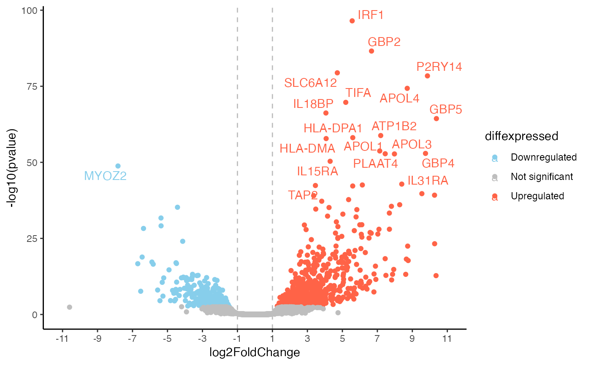

This function generates a base volcanoplot for differentially expressed genes that can then be expanded upon using further ggplot functions.
Usage
de_volcano(
res_de,
mapping = "org.Mm.eg.db",
logfc_cutoff = 1,
FDR = 0.05,
labeled_genes = 30
)Arguments
- res_de
An object containing the results of the Differential Expression analysis workflow (e.g.
DESeq2,edgeRorlimma). Currently, this can be aDESeqResultsobject created using theDESeq2framework.- mapping
Which
org.XX.eg.dbpackage to use for annotation - select according to the species- logfc_cutoff
A numeric value that sets the cutoff for the xintercept argument of ggplot
- FDR
The pvalue threshold to us for counting genes as de and therefore also where to draw the line in the plot. Default is 0.05
- labeled_genes
A numeric value describing the amount of genes to be labeled. This uses the Top(x) highest differentially expressed genes
Examples
library("ggplot2")
library("RColorBrewer")
library("ggrepel")
library("DESeq2")
#> Loading required package: S4Vectors
#> Loading required package: stats4
#> Loading required package: BiocGenerics
#>
#> Attaching package: ‘BiocGenerics’
#> The following objects are masked from ‘package:stats’:
#>
#> IQR, mad, sd, var, xtabs
#> The following objects are masked from ‘package:base’:
#>
#> Filter, Find, Map, Position, Reduce, anyDuplicated, aperm, append,
#> as.data.frame, basename, cbind, colnames, dirname, do.call,
#> duplicated, eval, evalq, get, grep, grepl, intersect, is.unsorted,
#> lapply, mapply, match, mget, order, paste, pmax, pmax.int, pmin,
#> pmin.int, rank, rbind, rownames, sapply, setdiff, table, tapply,
#> union, unique, unsplit, which.max, which.min
#>
#> Attaching package: ‘S4Vectors’
#> The following object is masked from ‘package:utils’:
#>
#> findMatches
#> The following objects are masked from ‘package:base’:
#>
#> I, expand.grid, unname
#> Loading required package: IRanges
#> Loading required package: GenomicRanges
#> Loading required package: GenomeInfoDb
#> Loading required package: SummarizedExperiment
#> Loading required package: MatrixGenerics
#> Loading required package: matrixStats
#>
#> Attaching package: ‘MatrixGenerics’
#> The following objects are masked from ‘package:matrixStats’:
#>
#> colAlls, colAnyNAs, colAnys, colAvgsPerRowSet, colCollapse,
#> colCounts, colCummaxs, colCummins, colCumprods, colCumsums,
#> colDiffs, colIQRDiffs, colIQRs, colLogSumExps, colMadDiffs,
#> colMads, colMaxs, colMeans2, colMedians, colMins, colOrderStats,
#> colProds, colQuantiles, colRanges, colRanks, colSdDiffs, colSds,
#> colSums2, colTabulates, colVarDiffs, colVars, colWeightedMads,
#> colWeightedMeans, colWeightedMedians, colWeightedSds,
#> colWeightedVars, rowAlls, rowAnyNAs, rowAnys, rowAvgsPerColSet,
#> rowCollapse, rowCounts, rowCummaxs, rowCummins, rowCumprods,
#> rowCumsums, rowDiffs, rowIQRDiffs, rowIQRs, rowLogSumExps,
#> rowMadDiffs, rowMads, rowMaxs, rowMeans2, rowMedians, rowMins,
#> rowOrderStats, rowProds, rowQuantiles, rowRanges, rowRanks,
#> rowSdDiffs, rowSds, rowSums2, rowTabulates, rowVarDiffs, rowVars,
#> rowWeightedMads, rowWeightedMeans, rowWeightedMedians,
#> rowWeightedSds, rowWeightedVars
#> Loading required package: Biobase
#> Welcome to Bioconductor
#>
#> Vignettes contain introductory material; view with
#> 'browseVignettes()'. To cite Bioconductor, see
#> 'citation("Biobase")', and for packages 'citation("pkgname")'.
#>
#> Attaching package: ‘Biobase’
#> The following object is masked from ‘package:MatrixGenerics’:
#>
#> rowMedians
#> The following objects are masked from ‘package:matrixStats’:
#>
#> anyMissing, rowMedians
library("org.Hs.eg.db")
#> Loading required package: AnnotationDbi
#>
data(res_de_macrophage, package = "mosdef")
p <- de_volcano(res_macrophage_IFNg_vs_naive,
logfc_cutoff = 1,
labeled_genes = 20,
mapping = "org.Hs.eg.db"
)
#> 'select()' returned 1:many mapping between keys and columns
p
#> Warning: Removed 17787 rows containing missing values or values outside the scale range
#> (`geom_text_repel()`).
